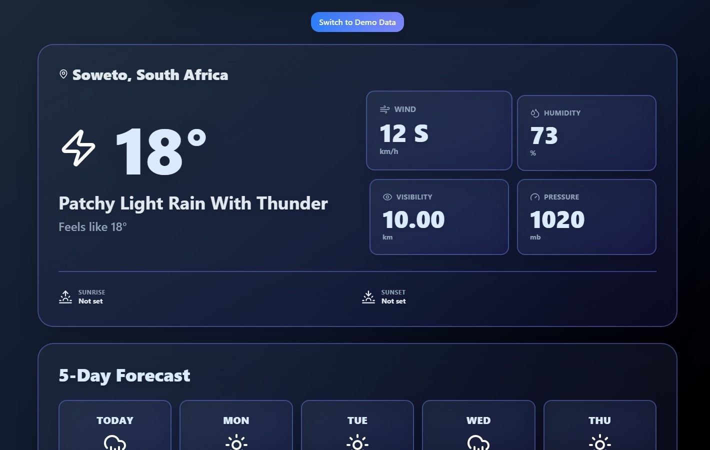
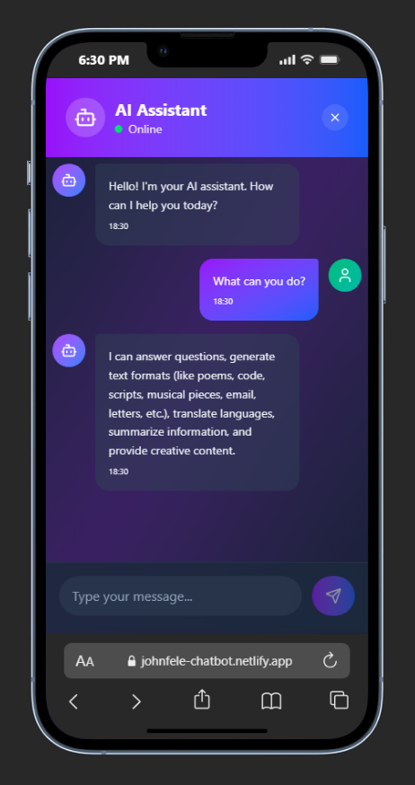
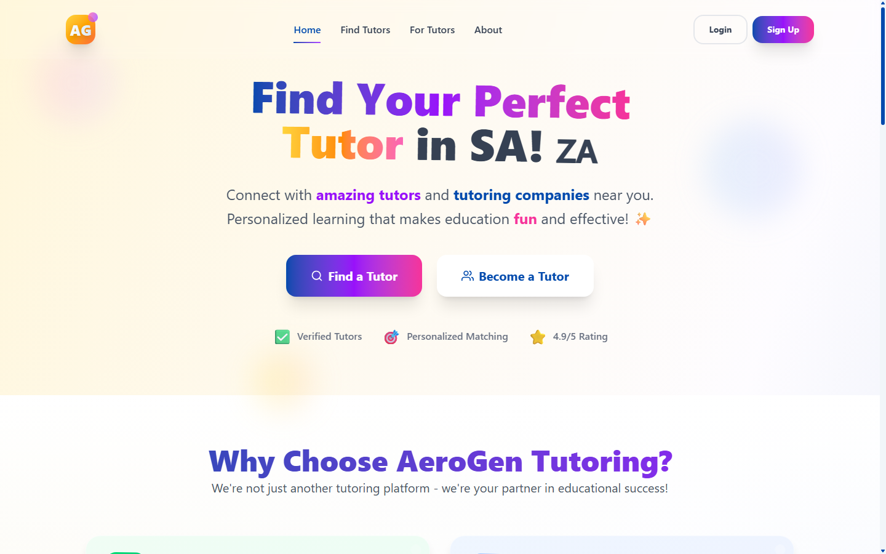

The challenge
Translate operational requirements into a secure platform that could support user onboarding, role-based functionality, account recovery and ongoing content delivery without a large engineering team.
Engineering case studies
Selected professional and personal work covering architecture, authentication, APIs, data modelling, deployment and product delivery.
Professional project · Private source
A full-stack learning platform designed, built, deployed and maintained for Ulink while I served as the project’s sole developer.
Translate operational requirements into a secure platform that could support user onboarding, role-based functionality, account recovery and ongoing content delivery without a large engineering team.
I owned the technical delivery path from application architecture and interface development to backend services, database integration, authentication, deployment and maintenance.
Improved API response times by approximately 30% while delivering a maintainable system that could be deployed and supported across Render and Netlify.
Personal project · In progress
A full-stack ordering application being developed to demonstrate production-style commerce workflows rather than a static storefront.

Deployed experiments


A conversational interface with a Node.js backend, input validation and Gemini-powered responses.

Next challenge
I’m available for worldwide remote roles and opportunities across Johannesburg and surrounding areas.
Start a conversation